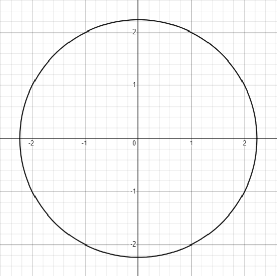

Circle
Definition of a Circle
A circle is a locus of points whose distances are equidistant r from a fixed point (h,k). The distance r is the radius, and the fixed point (h,k) is the center. The diameter of the circle as d is twice the radius.
Video Lesson
Equations
1. Standard Form
Center at (h,k) and radius r
\[(x-h)^2+(y-k)^2=r^2\]
Center at (0,0) and radius r
\[(x)^2+(y)^2=r^2\]
2. General Form
The general form does not change whenever the center is, it is constant.
\[\small Ax^2+Bx^2+Cx+Dy+F=0\]
Derivation of Formulas
Recall the distance formula \[(x_2-x_1)^2-(y_2-y_1)^2=r^2\]
The distance from point A to point B is the radius of the circle. Denoting point A as \(x_1\) and point B as \(x_2\) and getting their distance, radius is to be solved.
\[(x_2-x_1)^2-(y_2-y_1)^2=r^2\]
\[(x_2-x_1)^2-(y_2-y_1)^2=r^2\]
\[(x-h)^2-(y-k)^2=r^2\]
For centers at (h,k)
\[(x-0)^2-(y-0)^2=r^2\]
\[(x)^2+(y)^2=r\]
For centers at (0,0)
Figure 1.1 | All figures taken from Desmos
Graphing Circles at (0,0)
Video Lessons
Examples
1. Graph the circle whose equation is \((x)^2+(y)^2=25\)
Solution
\[(x)^2+(y)^2=r^2\]
\[(x)^2+(y)^2=25\]
\[r=\sqrt{25}\]
\[\bf \color{green} {r=5}\]
Center (0,0); Radius = 5
Figure 2.1
2. Graph the circle whose equation is \((x)^2+(y)^2=81\)
Solution
\[(x)^2+(y)^2=r^2\]
\[(x)^2+(y)^2=81\]
\[r=\sqrt{81}\]
\[\bf \color{green} {r=9}\]
Center (0,0); Radius = 9
Figure 2.2
3. The radius of the circle has an equation of \(3x+2=14\)
Solution
For radius:
\[3x+2=14\]
\(3x+2 \color{red}{-2}\) \(=14\) \(\color{red}{-2}\)
(Subtraction Property of Equality)
\(3x=12\)
(Division Property of Equality)
\[\bf \color{green} {x=4}\]
For the equation of the circle:
\[(x)^2+(y)^2=r^2\]
\[(x)^2+(y)^2=4^2\]
\[\bf \color{green} {x^2+y^2=16}\]
Figure 2.3
Challenge!
1. Given the equations \(4x+y=5\) and \(x-y=10\), the radius of a circle is equal to \(|xy|+(x-1)^2=r^2\). Find the equation of the circle it is at the origin and graph.
Solution
\(\begin{cases}4x+y=0 \\x-y=10 \end{cases}\)
(Systems of Linear Equation)
(Eliminate y)
\[5x=15\]
\[\bf \color{green} {x=3}\]
\[x-y-10\]
\(\color{red}{3}\)\(-y=10\)
(Substitue x)
\[-y=10-3\]
\(-y=7\)
(Division Property of Equality)
\[\bf \color{green} {y=-7}\]
\(|xy|+(x-1)^2=r^2\)
(Solve for r)
\(|(3)(-7)|+(3-1)^2=r^2\)
\[|(-21)|+(2)^2=r^2\]
\[|(-21)|+(4)=r^2\]
\[\bf \color{green} {r^2=25}\]
\((x)^2+(y)^2=r^2\)
(Substitution)
\[\bf \color{green} {(x)^2+(y)^2=25}\]
Figure 3.1.1
Figure 3.1.2
2. A circle has an inscribed square whose vertices on the right side \((\frac{20+5\sqrt{2}}{2},\frac{10+5\sqrt{2}}{2})\), and \((\frac{20+5\sqrt{2}}{2},\frac{10-5\sqrt{2}}{2})\) midpoints have a tangent line that passes through a circle at (0,0). What are the points of each vertex on the inscribed square? What is the equation of the circle at (0,0)?
Solution
Plot \(V_{1}\) \((\frac{20+5\sqrt{2}}{2},\frac{10+5\sqrt{2}}{2})\), and \(V_{2}\) \((\frac{20+5\sqrt{2}}{2},\frac{10-5\sqrt{2}}{2})\)
Get their midpoint to illustrate the tangent line.
\(x=\frac{x_{1}+x_{2}}{2}\) ; \(y=\frac{y_{1}+y_{2}}{2}\)
\(x=\frac{(\frac{20+5\sqrt{2}}{2}-\frac{20+5\sqrt{2}}{2})}{2}\) ; \(y=\frac{(\frac{10+5\sqrt{2}}{2}-\frac{10-5\sqrt{2}}{2})}{2}\)
\(x=\frac{20+5\sqrt{2}}{2}\) ; \(y=5\)
\(m_{1}\) \((\frac{20+5\sqrt{2}}{2},5)\)
Solve for the distance to have the length of the sides of the square.
\[(x_{2}-x_{1})^2+(y_{2}-y_{1})^2=r^2\]
\[\small (\frac{20+5\sqrt{2}}{2}-\frac{20+5\sqrt{2}}{2})^2+(\frac{10+5\sqrt{2}}{2}-\frac{10-5\sqrt{2}}{2})^2=d^2\]
\[(0)^2+(5\sqrt{2})^2=d^2\]
\[d=5\sqrt{2}\]
Figure 3.2.1
Subtract the x-coordinates of the two vertices to \(5\sqrt{2}\) to get the vertices of the left side of the inscribed square.
\(V_{3}\) \((\frac{20+5\sqrt{2}}{2}-5\sqrt{2},\frac{10+5\sqrt{2}}{2})\) , \(V_{4}\) \((\frac{20+5\sqrt{2}}{2}-5\sqrt{2},\frac{10-5\sqrt{2}}{2})\)
\(V_{3}\) \((\frac{20-5\sqrt{2}}{2},\frac{10+5\sqrt{2}}{2})\) , \(V_{4}\) \((\frac{20-5\sqrt{2}}{2},\frac{10-5\sqrt{2}}{2})\)
Figure 3.2.2
To get the center of the circle, substract the half of the length of the sides which is \(\frac{5\sqrt{2}}{2}\) to the x-coordinate of the midpoint of the right side of the square.
\(C\) \((\frac{20+5\sqrt{2}}{2}-\frac{5\sqrt{2}}{2},5)\)
\(C\) \((10,5)\)
Use the distance formula from the center of the circle to any of the vertices to get the radius and graph the circle.
\[(x_{2}-x_{1})^2+(y_{2}-y_{1})^2=d^2\]
\[\small (\frac{20+5\sqrt{2}}{2}-\frac{20-5\sqrt{2}}{2})^2+(5+\frac{10+5\sqrt{2}}{2})^2=r^2\]
\[r=5\]
Figure 3.2.3
Knowing that the point of tangency is at any point of the circle at (0,0), and it is at the left side of the cartesian plane, we need to extend the midpoint’s line towards left understood \(y=5\)
The point where the line y = 5 touches the y-axis is the same point of tangency given if center is at (0,0) Distance of the point of tangency to the circle at (0,0) is the radius of the circle, and can be solved through the distance formula.
\[(x_{2}-x_{1})^2+(y_{2}-y_{1})^2=r^2\]
\[(0-0)^2+(5-0)^2=r^2\]
\[(5)^2=r^2\]
\[\bf \color{green} {r=5}\]
Knowing that the center of the circle is at (0,0) and its radius is 5, we can directly substitute at the standard form of the circle to get the equation.
\[(x)^2+(y)^2=5^2\]
\[\bf \color{green} {x^2+y^2=25}\]
\(\small \color{green}V_{1}\) \(\small \color{green}(\frac{20+5\sqrt{2}}{2},\frac{10+5\sqrt{2}}{2})\) ; \(\small \color{green}V_{2}\) \(\small \color{green}(\frac{20+5\sqrt{2}}{2},\frac{10-5\sqrt{2}}{2})\) ; \(\small \color{green}V_{3}\) \(\small \color{green}(\frac{20-5\sqrt{2}}{2},\frac{10+5\sqrt{2}}{2})\) ; \(\small \color{green}V_{4}\) \(\small \color{green}(\frac{20-5\sqrt{2}}{2},\frac{10-5\sqrt{2}}{2})\)
(Final Answer)
Figure 3.2.4